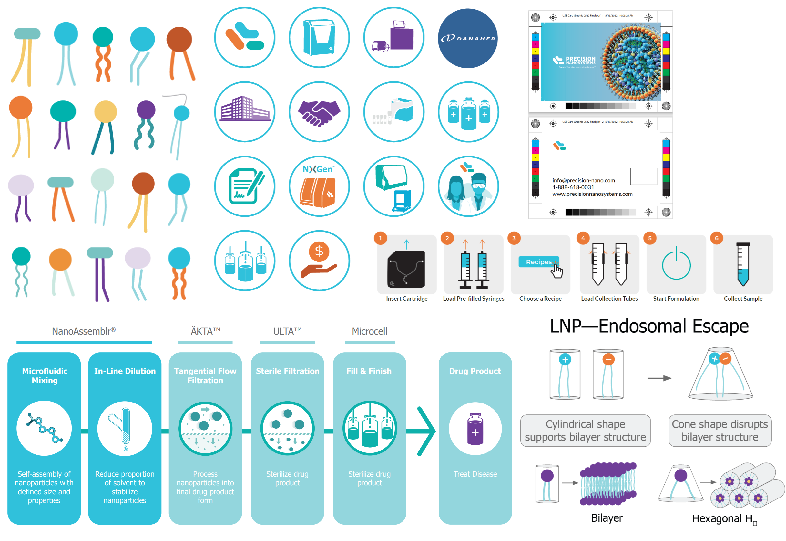

Overview
An 8 month graphic design internship within the marketing department, designing slide decks, social media graphics, and application notes, creating illustrations, organizing documents, and creating an info guide for the next co-op.
roles
Graphic Design
team
Individual
duration
January – August 2022
tools
Illustrator, Photoshop, InDesign, Powerpoint
Over the course of 8 months, I supported the marketing department along with the graphic design team to create various graphic collaterals for the company to use as advertisements and supportive materials for product sales, events, and seminars.
Duties in the Marketing Department
Social Media Graphics
As one of my main tasks, I was heavily involved in creating social media graphics to help promote the seminars and events, while following the brand guideline. One challenging factor was to try and come up with different designs without drifting away too much from the previous graphics that were created. It took few tries to land a design because some of my early creations were too explorative compared to the previous designs the company had. Many of the graphics I created required image searching, photo editing, and developing illustrations.

Some of the graphics I created
product launch
I took part in a new product launch where I was assigned to create each of the collaterals to advertise, sell, and inform the clients about the new ignite+ instrument. Some of my tasks included creating and renewing illustrations, designing layouts, and editing images.
Application Notes
For the application notes, I was tasked to recreate the illustrations and design the booklet within the layout. I mainly communicated back and forth with the scientists and the marketing manager to continuously iterate and finalize the booklet. The booklet required refitting and organizing all the information into a set amount of pages with appropriate information on each page.
Application notes placed in mockup
Click to view the Application Note!
Specification sheet
I also created a specification sheet for the new instrument (Ignite+) to be distributed with the product to advertise and sell other materials relevant to the product.

The Ignite+ instrument specification sheet
Brochure
I also took part in producing the brochure which encompasses the product and service information provided for the clients.
Click for the brochure!
Google Advertisement
I created advertisements for google platform to advertise the new product launch. The graphics were translated from the social media graphics to keep consistency.
Different sized Google advertisement banners to advertise the new product launch
Illustrations
Examples of various illustrations and icons created for the collaterals
more design works
Company History Timeline
I took part in creating a visual diagram to be used on the company website and in the presentation slides for the coming years. I created the icons in each of the bubbles while referencing the colour palette. It took several revisions to fit all the information within the restricted size as the company had a long history since 2010. The diagram received a compliment from the department manager.
The timeline created for the presentation slides
The timeline on the Precision Nanosystems website (https://www.precisionnanosystems.com/our-company)
Mini Brand Guide
Mini brand guide
For my final task, I got to create a mini brand guide for non-designers as well as the oncoming co-ops to reference to ease the workload for the graphics team. As a non-creative firm, many employees were not informed or have minimal knowledge in the design software and company branding. To help inform all the employees who require creating diagrams, presentation slides, posters, and illustrations, I created a renewed brand guide to be referenced for any collaterals that will be sent to the graphics team to finalize. Eventually, the goal of this guide is to help the design team by reducing the minor editing work: re-colouring, rebranding, adjusting each layout for presentation slides, and more.
Conclusion
Reflection
During my 8 months at PNI, I was able to communicate and collaborate with scientists and the marketing team to create various graphic collaterals. I explored different ways to clearly communicate the information to attract attendees and clients to attend evets and seminars hosted by the scientists each week. Overall, I gained more confidence in presenting my work, communicating my ideas, time management, and organizational skills as well as understanding the design concepts within the biotechnology industry.